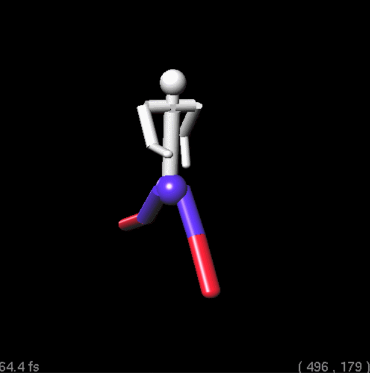
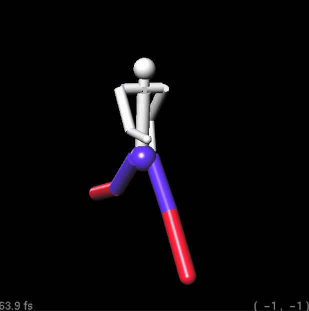
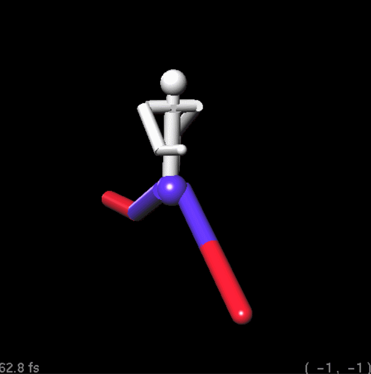
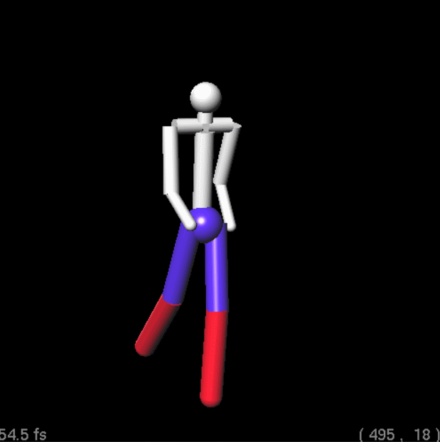
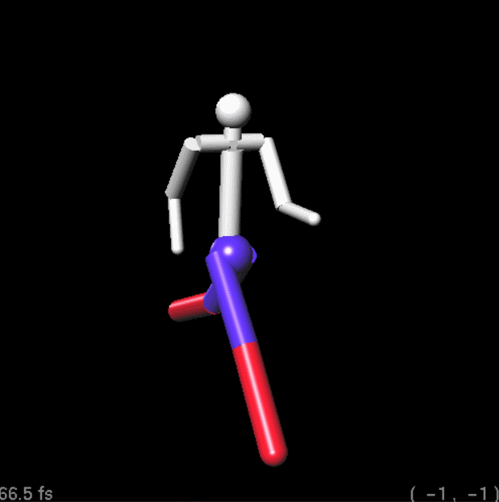
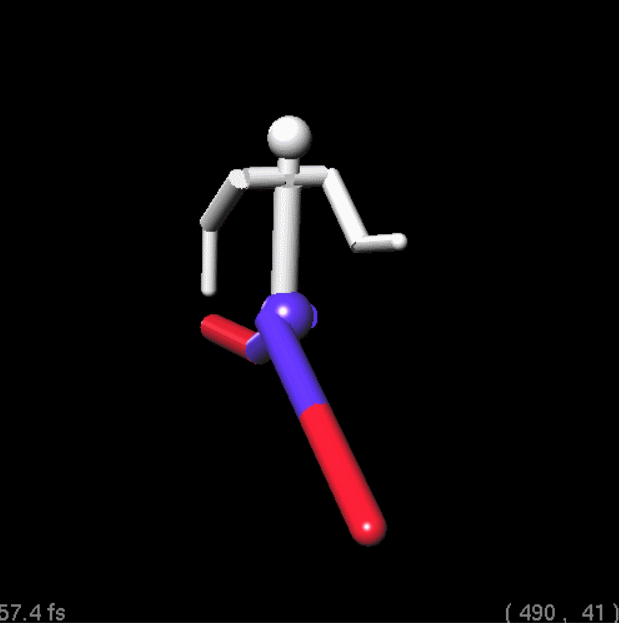
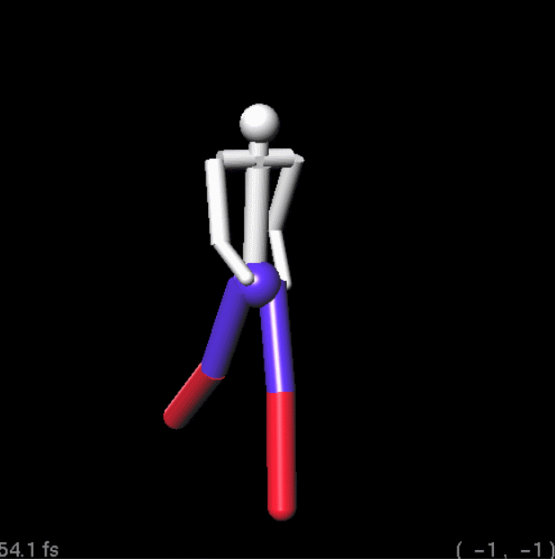
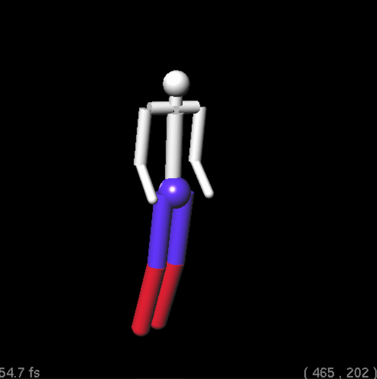

|
--the scene of merry-go-round |
Total implemented points: 15
Fully Implemented:
|  |  |  |  |  |
--parameter 1 --interpolant 3 |
--parameter 2 --interpolant 3 |
--parameter 3 --interpolant 3 |
--parameter 4 --interpolant 3 |
--parameter 5 --interpolant 3 |
|  |  |  | |
--parameter 4 --interpolant 1 |
--parameter 4 --interpolant 2 |
--parameter 4 --interpolant 3 |
--parameter 4 --interpolant 4 |
| |
--the scene of merry-go-round |